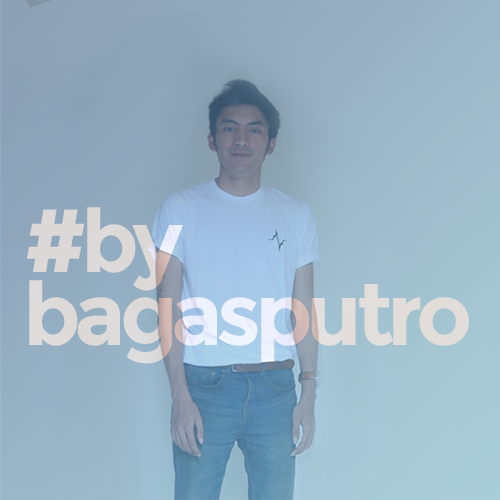

A Brief History of Irshadi
Irshadi Bagasputro, born April 16th 1995 Born & raised in Jakarta, Indonesia. After finishing high school, he went to Universitas Padjajaran. During his senior years, he took several opportunities to work together with the faculty member. One of his contribution in late 2017 was to give a short course about "Designing a Powerful Point in Microsoft Powerpoint", this project was a collaboration between Universitas Padjajaran and Ministry of Home Affairs Republic of Indonesia. After four years and six months he (finally managed to) graduated in February 2018 (his thesis was about usabilities aspect on website based on Steve Krug's law of usability), obtaining bachelor degree in Information and Library Science.Afterwards, he went to JULO, a series A startup company as an UI/UX designer. He did several major project on JULO such as revamped the registration process application v3.

About Me
I am an Information Architect from Jakarta, Indonesia. I like the idea of connecting user with the content they needed. My area of expertise is within the information seeking and information behavior, information architecture, and usability. So you may wonder, what an information architect do ? Well in short, i define, create, or even analyze structural design of shared information environments. Because not all categorizations will be suitable or relevant to all users. Let me put in this perspective, tomatoes are botanically classed as berry-type fruits – but as the saying goes, “knowledge is knowing that a tomato is a fruit, wisdom is knowing not to put it in a fruit salad”
- 2013 · Graduated from SMA Negeri 28 Jakarta. With social science studies.
- 2016 · Internship at PT. Astra International TBk. - BMW. Digital Marketing.
- 2018 · Graduated from Universitas Padjajaran. Obtaining bachelor degree in Library & Information Science.
- 2018 · Started his first full-job at JULO as an UI/UX Designer.
© 2019 Irshadi Bagasputro.